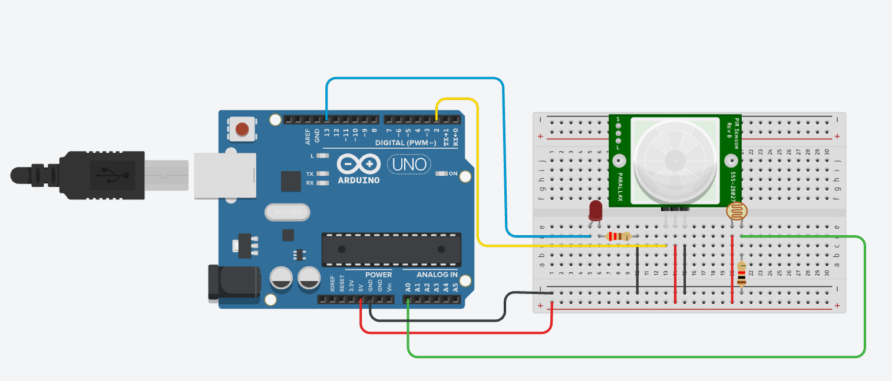
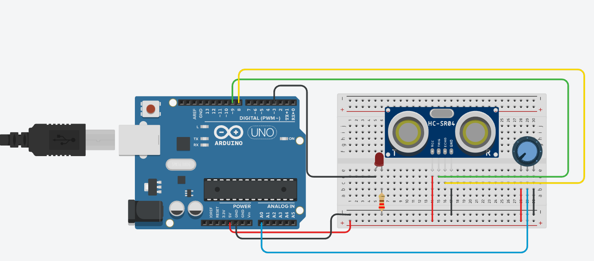
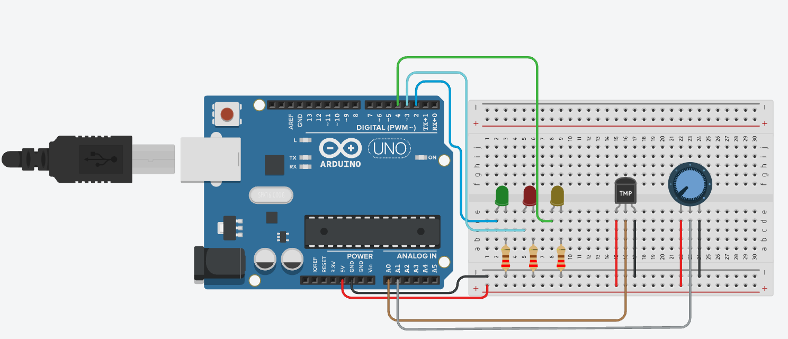
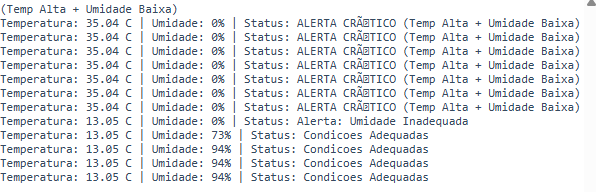

Três desafios práticos de sensoriamento montados e simulados no Tinkercad Circuits com Arduino Uno, aplicando na prática os conceitos de leitura de sensores, tomada de decisão e comunicação de dados apresentados neste catálogo. Cada desafio traz o circuito montado, o código em C++ comentado e um espaço reservado para o vídeo de demonstração.
Sistema de iluminação automática que combina um sensor de presença (PIR) com um sensor de luminosidade (LDR): o LED só acende quando há presença detectada e o ambiente está escuro ao mesmo tempo, simulando uma lâmpada que evita desperdício de energia durante o dia.

const int pinPIR = 2;
const int pinLDR = A0;
const int pinLED = 13;
const int limiteLuz = 500; // Ajuste conforme o nível de escuro desejado
void setup() {
pinMode(pinPIR, INPUT);
pinMode(pinLED, OUTPUT);
}
void loop() {
int presenca = digitalRead(pinPIR);
int valorLuminosidade = analogRead(pinLDR);
// Regra: Pessoa presente + ambiente escuro -> LED ligado
if (presenca == HIGH && valorLuminosidade < limiteLuz) {
digitalWrite(pinLED, HIGH);
} else {
digitalWrite(pinLED, LOW);
}
delay(100);
}
Sensor de auxílio de estacionamento com sensor ultrassônico (HC-SR04) e um potenciômetro que define a distância de segurança (entre 10 cm e 60 cm). O LED fica apagado enquanto o objeto está distante, pisca cada vez mais rápido conforme o veículo se aproxima do limite e fica aceso fixo quando a distância de perigo é atingida.

const int pinTrig = 9;
const int pinEcho = 8;
const int pinPot = A0;
const int pinLED = 3;
long lerDistancia() {
digitalWrite(pinTrig, LOW);
delayMicroseconds(2);
digitalWrite(pinTrig, HIGH);
delayMicroseconds(10);
digitalWrite(pinTrig, LOW);
long duracao = pulseIn(pinEcho, HIGH);
return duracao * 0.034 / 2; // Converte tempo em centímetros
}
void setup() {
pinMode(pinTrig, OUTPUT);
pinMode(pinEcho, INPUT);
pinMode(pinLED, OUTPUT);
}
void loop() {
long distancia = lerDistancia();
int valPot = analogRead(pinPot);
// O potenciômetro define o limite de segurança entre 10cm e 60cm
int limite = map(valPot, 0, 1023, 10, 60);
int limitePerigo = limite / 2;
if (distancia > limite) {
digitalWrite(pinLED, LOW); // Objeto distante
} else if (distancia <= limitePerigo) {
digitalWrite(pinLED, HIGH); // Objeto muito próximo (ligado contínuo)
} else {
// Objeto se aproximando: velocidade do pisca aumenta conforme chega perto
int tempoPisca = map(distancia, limitePerigo, limite, 40, 300);
digitalWrite(pinLED, HIGH);
delay(tempoPisca);
digitalWrite(pinLED, LOW);
delay(tempoPisca);
}
delay(30);
}
Monitoramento ambiental com sensor de temperatura TMP36 e um potenciômetro simulando a leitura de umidade. Três LEDs indicam o status do ambiente (verde = condições adequadas, vermelho = temperatura elevada, amarelo = umidade inadequada) e todos os dados são enviados continuamente ao Monitor Serial, incluindo mensagens de alerta.


const int pinTemp = A0;
const int pinUmidade = A1;
const int ledVerde = 2;
const int ledVermelho = 3;
const int ledAmarelo = 4;
const float tempLimite = 30.0; // Limite superior de temperatura (°C)
const int umidadeLimite = 40; // Limite inferior de umidade (%)
void setup() {
pinMode(ledVerde, OUTPUT);
pinMode(ledVermelho, OUTPUT);
pinMode(ledAmarelo, OUTPUT);
Serial.begin(9600); // Inicializa comunicação serial exigida
}
void loop() {
// Conversão de leitura analógica do TMP36 para Celsius
int leituraTemp = analogRead(pinTemp);
float voltagem = leituraTemp * (5.0 / 1023.0);
float temperatura = (voltagem - 0.5) * 100.0;
// Conversão da leitura do potenciômetro para porcentagem de umidade
int umidade = map(analogRead(pinUmidade), 0, 1023, 0, 100);
bool tempElevada = (temperatura > tempLimite);
bool umidadeBaixa = (umidade < umidadeLimite);
// Lógica dos LEDs indicadores
if (!tempElevada && !umidadeBaixa) {
digitalWrite(ledVerde, HIGH);
digitalWrite(ledVermelho, LOW);
digitalWrite(ledAmarelo, LOW);
} else {
digitalWrite(ledVerde, LOW);
digitalWrite(ledVermelho, tempElevada ? HIGH : LOW);
digitalWrite(ledAmarelo, umidadeBaixa ? HIGH : LOW);
}
// Saída de dados no Monitor Serial
Serial.print("Temperatura: ");
Serial.print(temperatura);
Serial.print(" C | Umidade: ");
Serial.print(umidade);
Serial.print("% | Status: ");
if (tempElevada && umidadeBaixa) {
Serial.println("ALERTA CRÍTICO (Temp Alta + Umidade Baixa)");
} else if (tempElevada) {
Serial.println("Alerta: Temperatura Elevada");
} else if (umidadeBaixa) {
Serial.println("Alerta: Umidade Inadequada");
} else {
Serial.println("Condicoes Adequadas");
}
delay(1000);
}